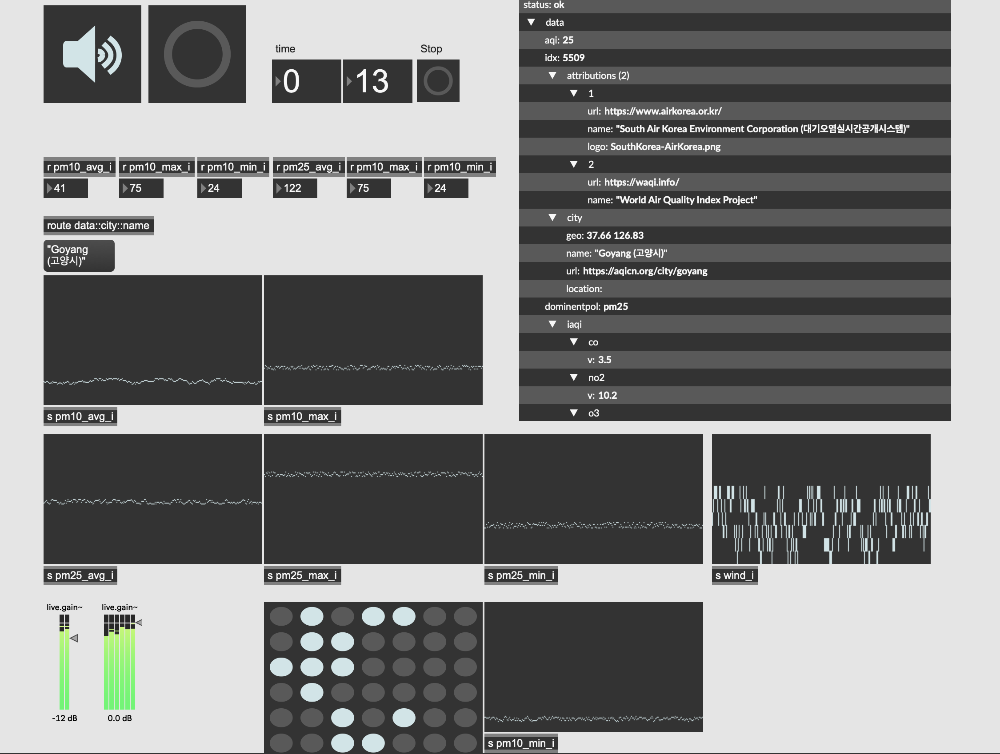

Island Air


Audiovisual Using Real-Time Climate Data
This project is a form of data sonification that transforms real-time air quality data from Nodeul Island, Seoul, into an evolving audiovisual artwork. By communicating with an API server, the system receives daily air quality metrics and translates them into both sound and visual elements.
The piece responds to these fluctuations in real time:
On days with clear air, the visual palette becomes bright and open, and the sound is clean—built from waveforms with minimal overtones, evoking a sense of clarity and calm.
On days with high levels of fine dust (PM2.5), which are common during spring and winter in South Korea due to transboundary pollution and seasonal patterns, the work shifts drastically. The visuals darken, textures become turbulent, and the sound becomes noisier and more complex, filled with rich partials and distortion.
As the environment changes, so does the piece—never repeating the same way twice. The work functions as a daily environmental diary, capturing invisible yet palpable shifts in our atmosphere, and drawing attention to the increasingly unstable nature of urban air quality. It invites reflection on how climate and pollution—often abstract or unseen—can be perceived emotionally and viscerally through art.
Credits
- Sound & Visual: Kim Eunjun
- System: Max8 (Cycling '74)
- Data Source: Real-time Air Quality API (Nodeul Island)